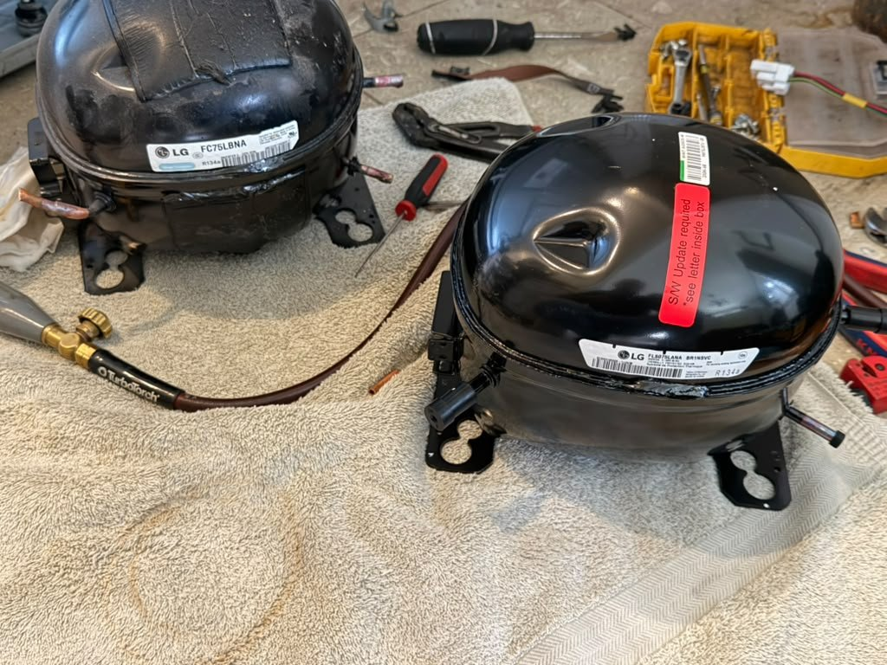
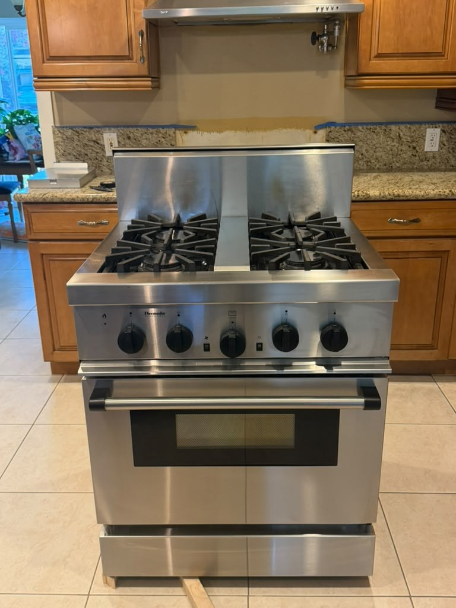
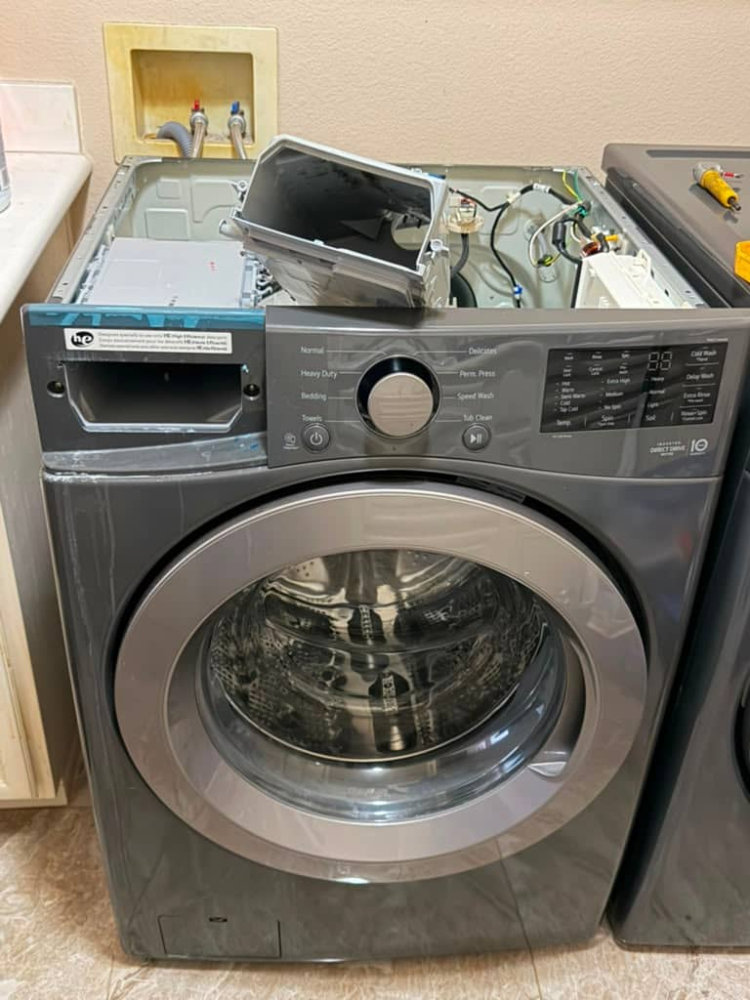
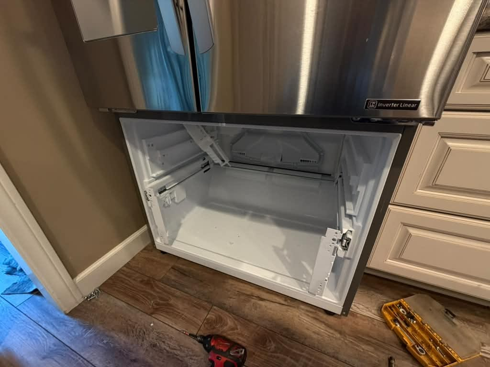
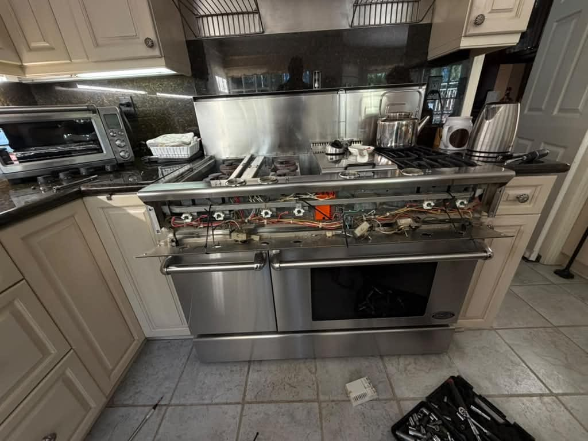
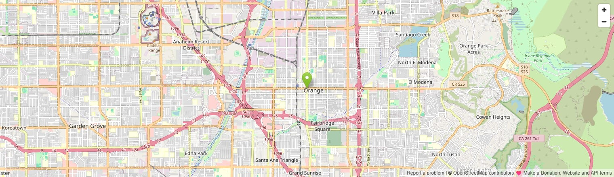

Appliance Repair in Orange, CA
Same-day service across Old Towne, Chapman University, Serrano Heights, El Modena, and every Orange neighborhood. All major brands. Licensed & insured.
5.0 · 160 Google reviewsMon–Sat, 8am–7pm. Two-hour arrival window. The technician calls before arriving.
See neighborhoods and ZIP codes
What to expect
- Flat $99 diagnostic feeApplied toward the repair if you approve the work.
- Written quote firstItemized, before any work starts.
- 90-day parts, 30-day laborWarranty on every repair.
- Same-day serviceCall or request online.
Family-owned since 2017 · Licensed, bonded & insured
Recent Orange Service Calls
Four real jobs our technician completed in Orange, CA. An LG refrigerator whose linear compressor failed, so we brazed in a new one and recharged the sealed system with R134a. An LG front-load washer whose detergent dispenser had clogged with hardened build-up, so we fitted a new assembly. An LG refrigerator whose ice maker was replaced on the freezer side. And a DCS range where the spark module and bake igniter were replaced.



See more completed jobs on our recent repairs gallery.
What Orange County Customers Say
From our 160 verified 5-star Google reviews
Prompt, professional, clean, reasonably priced — would definitely recommend him. I would give him more than five stars if I could. Will be using him in the future for sure.
Thank you AG for servicing my washer and dryer!!!
AG replaced our oven igniter today on short notice. Very efficient and friendly. He was recommended by a friend.
What We Fix in Orange
Your fridge stops cooling the morning after a grocery run. The washer locks mid-cycle with a full load inside. Whatever broke, we fix it, usually on the same day you call.
Call or Request Online
Call (949) 629-5365 or submit the online form. Tell us the appliance type, brand, and what it's doing.Same-Day Dispatch
We give you a two-hour arrival window and call when your technician is heading to your Orange address.Diagnosis & Quote
The technician runs a full diagnostic and gives you a firm quote before starting any work. No surprises.Repair & Warranty
Most repairs complete in a single visit. All work carries a 90-day parts and 30-day labor warranty.
Pricing & Discounts
- $99 diagnostic fee, applied toward your repair
- 20% off labor for seniors 60+ & repeat customers.
Estimates vary by brand, part availability, and diagnosis. Full pricing guide
Orange Neighborhoods We Serve
From the Victorian bungalows of Old Towne to the hillside newer builds in Serrano Heights, we send technicians to every corner of Orange. Same rates, no travel surcharges.
-
Old Towne Orange
ZIP 92866Historic district surrounding The Plaza, one of Orange County's best-preserved Victorian and Craftsman neighborhoods. Renovated kitchens in these homes often hold premium appliances that are worth repairing rather than replacing.
-
Chapman University Area
ZIP 92866Dense residential neighborhood around Chapman University. Mix of rental properties and owner-occupied homes. High appliance turnover; we prioritize same-day dispatch here.
-
Eichler Homes (Panorama Heights)
ZIP 92869One of Southern California's rare Eichler mid-century modern subdivisions. These homes often feature a mix of aging appliances and premium replacements installed during renovations.
-
Serrano Heights
ZIP 92869Newer planned community in the foothills of east Orange. Homes built in the early 2000s are now at the age where common appliance components start to wear.
-
El Modena & Orange Hills
ZIP 92869Southeast Orange neighborhoods ranging from working-class ranchers to larger hillside estates. We cover the full range, compact apartment appliances and high-end built-ins alike.
-
Orange Park Acres & Villa Park Adjacent
ZIP 92869 & 92861Also covering all remaining Orange ZIPs: 92856, 92857, 92862, 92865, 92867, 92868. If you're in Orange, we come to you; no extra travel fees.
Common Appliance Issues in Orange Homes
The City of Orange has one of the most varied housing stocks in the county, from century-old homes downtown to mid-century Eichlers and newer hillside tracts, and each era brings its own appliance issues.
In Old Towne Orange and the Chapman University area, the historic Craftsman and early-1900s homes (ZIP 92866) often have compact or older kitchens, and many are rentals with hard-working, frequently replaced appliances. Quick-turn repairs on ranges, dishwashers, and laundry are the norm, and we work around tight historic kitchen layouts.
The Eichler tract in Panorama Heights is a mid-century-modern landmark, and those homes have distinctive galley kitchens. Built-in ovens and slide-in ranges in Eichlers can be tricky to service around the original cabinetry, and we take the care these homes need when removing and reinstalling built-in units.
Up in Serrano Heights, El Modena, Orange Hills, and Orange Park Acres, newer and larger homes carry built-in refrigerators, double wall ovens, and premium brands. Sealed-system cooling, control-board, and built-in dishwasher repairs are the common requests in the hillside neighborhoods.
Brands we repair
Orange homes run the full range, Whirlpool and GE in the older bungalows, LG and Samsung in mid-2000s builds, and Sub-Zero, Thermador, or Miele in the renovated Old Towne kitchens and hilltop estates. We service all of them. We also service Dacor and DCS.
- Sub-Zero
- Wolf
- Samsung
- LG
- Whirlpool
- GE
- Maytag
- Frigidaire
- Bosch
- KitchenAid
- Kenmore
- Miele
- Thermador
- Viking
- Electrolux
Independent repair service. Not affiliated with or endorsed by these manufacturers; brand names and logos are trademarks of their owners. If your appliance is still under manufacturer warranty, check with the manufacturer before booking.
Orange Service Area Details
The City of Orange sits in central Orange County, roughly a 15 to 20 minute drive from our Stanton base via the 22 or 55 freeway. Old Towne and the Chapman area are quick to reach off the 22; Serrano Heights, Orange Hills, and Orange Park Acres in the 92869 hills take a few minutes more. Same-day appointments are available across 92866 through 92869 for calls received before noon, with a two-hour arrival window.

Appliance repair across Orange
Universal Appliances Repair Group Inc. provides same-day service in Orange for refrigerators, washers, dryers, dishwashers, ovens, stoves, freezers, and garbage disposals. We cover Old Towne Orange, the Chapman University area, Serrano Heights, El Modena, Orange Park Acres, and the Eichler neighborhood, across ZIP codes 92856, 92866, 92867, 92868, and 92869.
We service Whirlpool, LG, Samsung, GE, Bosch, KitchenAid, Sub-Zero, Thermador, and all other major brands. We also serve nearby Anaheim, Santa Ana, Tustin, and Garden Grove. Call (949) 629-5365 or book online.
FAQ: Orange Appliance Repair
Still have a question? Call (949) 629-5365.
Yes. Same-day appliance repair is available throughout Orange when you call before noon. We dispatch from Stanton and can typically reach Old Towne Orange, the Chapman University area, Serrano Heights, and El Modena within 15–20 minutes. Call (949) 629-5365 to confirm same-day availability.
We service all major brands in Orange: Whirlpool, GE, Samsung, LG, Bosch, KitchenAid, Maytag, Frigidaire, Electrolux, Sub-Zero, Viking, Thermador, and Miele, among others. We service these brands but make no claim of factory authorization. If your appliance is still under manufacturer warranty, verify with the manufacturer before booking.
We cover all of Orange's ZIP codes: 92856, 92857, 92861, 92862, 92865, 92866 (Old Towne Orange), 92867, 92868, and 92869 (El Modena, Serrano Heights, Orange Park Acres). If you're in Orange, we come to you; no extra travel fees.
Yes. Old Towne Orange (ZIP 92866) is a regular service area. The Victorian and Craftsman bungalows around The Plaza often have older appliances, or newer high-end replacements in renovated kitchens. We service both. Same-day appointments available most days of the week.
Yes. The Eichler neighborhood in Orange (Panorama Heights area, ZIP 92869) is within our service area. Mid-century Eichler homes often feature original or early-replacement appliances, and their open floor plans benefit from quick same-day service. We service all major brands found in these homes.
Our technicians stock common replacement parts (heating elements, drive belts, drain pumps, thermostats, door gaskets, start relays, and ice maker components) on the van. The majority of repairs are completed in a single visit. For less common parts, we schedule a return visit as soon as the part arrives, typically within 1–2 business days.
The general guideline: if the appliance is under 10 years old and the repair costs less than half the price of a comparable new unit, repair almost always makes sense. Our technicians give you an honest assessment during the diagnostic visit; we'll tell you if replacement is the smarter call. We'd rather give you straight advice than spend money on a repair that won't last.
Yes. All repairs include a warranty on both parts and labor. If the same issue returns within 30 days, we come back and fix it at no additional charge; replaced parts stay covered for 90 days. Your technician will confirm the specific warranty terms when they provide the quote.
Repair Resources for Orange Homeowners
Guides written for appliances common in Orange homes.
Need Appliance Repair in Orange?
Same-day service available across Old Towne, Serrano Heights, El Modena, and all of Orange, CA. All appliances, all brands. Licensed technicians, 90-day parts / 30-day labor warranty on every repair.
Call (949) 629-5365
Request a Repair
Mon–Sat, 8am–7pm